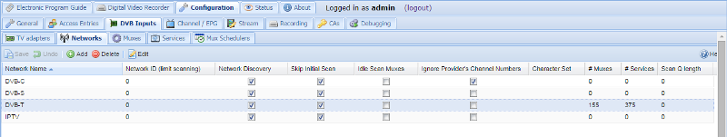

Configuration - DVB Inputs - Networks
A network is the type of carrier for your television signals. Tvheadend supports several different types of network, notably:
DVB-C : Cable TV, delivered via a cable to your house
DVB-S : Satellite (includes S2), so any signal coming in via a dish
DVB-T : Terrestrial, so over-the-air broadcasts received through a traditional television aerial
ATSC : Over-the-air terrestrial, common in north and central America and parts of south Asia
IPTV : IP, so over the Internet

Buttons
The buttons have the following functions:
Add: Add a new network. You can choose from any of the types described above.
Delete: Delete an existing network. This will also remove any association with an adapter.
Edit: Edit an existing network. This allows you to change any of the parameters you’d otherwise set when adding a new network, e.g. network discovery, idle scan, etc. - similar to using the check boxes to enable/disable functions.
Save: Saves any changes.
Undo: Undoes any changes.
Columns
The columns have the following functions:
Network Name: The name of the network. This can be set automatically or you can give it a name that means something to you (e.g. if you have multiple OTA networks).
Network Discovery: Whether automatic discovery is enabled for this network, i.e. whether Tvheadend looks for muxes or simply stays with the list of muxes as defined initially.
Skip initial Scan: Don’t scan all muxes in this network at Tvheadend start. The initial scan procedure is not a blind scan. Only known muxes registered to this network are scanned. If Network Discovery is enabled and new muxes are discovered using DVB descriptors, these muxes will be scanned too.
Idle Scan Muxes: When nothing else happens Tvheadend will continuously rotate among all muxes and tune to them to verify that they are still working when the inputs are not used for streaming. If your adapter have problems with lots of (endless) tuning, try to disable this. Note that this option should be OFF for the normal operation. This type of mux probing is not required and it may cause issues for SAT>IP (limited number of PID filters).
Ignore Provider’s Channel Numbers: Some providers will try to set a channel number so that every receiver is consistent - “tune to Channel x on 150”. This option allows you to ignore this and let tvhheadend allocate a channel number itself.
Max Input Streams: IPTV : maximum simultaneous streams that can be played.
Max Bandwidth: IPTV : maximum bandwidth allowed for streams.
Max timeout: IPTV : maximum timeout trying to play stream.
Network ID: If you experience problems caused by overlaps between multiple network providers this option can be used to filter which network ID is received by a given adapter.
Ignore Provider’s Channel Numbers: Do not use the local channel numbers defined by provider.
SAT>IP Source Number: This field is matched through the “src” parameter asked from the SAT>IP client. Usually (and by default) this value is 1. For satellite tuners, this value determines the satellite source (dish). By specification position 1 = DiseqC AA, 2 = DiseqC AB, 3 = DiseqC BA, 4 = DiseqC BB, but any numbers may be used - depends on the SAT>IP client. Note that if you use same number for multiple networks, the first matched network containing the mux with requested parameters will win (also for unknown mux). If this field is set to zero, the network cannot be used by the SAT>IP server.
EIT Local Time: EPG (EIT) events uses local time instead UTC.
Character Set: The character encoding for this network (e.g. UTF-8).
Priority: IPTV : The network priority value (higher value = higher priority to use muxes/services from this network).
Streaming Priority: IPTV : The network priority value for streamed channels through HTTP or HTSP (higher value = higher priority to use muxes/services from this network). If not set, the standard network priority value is used.